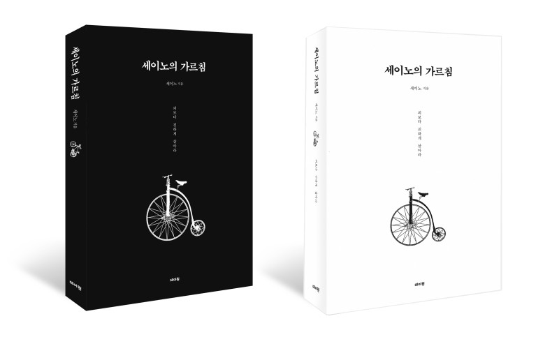

안녕하세요 라보엠입니다.
도서출판 데이원에서 세이노의 가르침이란 책을 무료 배포하고 있습니다. 세이노의 가르침은 자기계발 분야에서 꾸준히 인기를 끌고 있는 책으로, 저자 세이노는 자신의 삶의 경험을 바탕으로 성공과 행복에 관한 철학을 제시합니다. 이 책은 단순히 부자가 되는 방법을 넘어, 인생을 어떻게 살아야 하는지에 대한 깊은 통찰을 제공하고 있습니다.

세이노의 가르침 PDF 전자책 무료 배포
특이하게도 저자에게 판매수익이 없는 책이라 가능한 이벤트인것 같습니다.
책을 좋아하시는 분은 다운로드 받으셔서 읽어보시길 추천드립니다.
?세이노의 가르침 PDF/전자책 무료 배포(2023년판)
?2023년 4월 5일 수정 버전 배포 예정입니다. 문의 및 건의 사항은 안부게시판에 남겨주시면 감사하겠습...
blog.naver.com
세이노의 가르침 책에 언급된 도서 및 외부 자료 또한 공유하고 있습니다.
?<세이노의 가르침> 참고자료?
<세이노의 가르침>에서 본문에 언급된 도서들을 포함한 모든 외부 자료를 정리하여 공유드립니다. 다...
blog.naver.com
세이노는 일본 이름이 아니라 sayno 필명이라고 합니다.
종이책은 7,200원에 판매하고 있습니다.
세이노의 가르침 - YES24
재야의 명저 『세이노의 가르침』 2023년판 정식 출간!순자산 천억 원대 자산가, 세이노의 ‘요즘 생각’을 만나다2000년부터 발표된 그의 주옥같은 글들. 독자들이 자발적으로 만든 제본서는 물
www.yes24.com
주요 내용
- 목표 설정과 노력: 세이노는 목표를 설정하고 이를 달성하기 위해 꾸준히 노력하는 것이 중요하다고 강조합니다. 목표 없는 삶은 방향성을 잃기 쉽고, 명확한 목표가 삶에 의미를 부여한다고 설명합니다.
- 내면의 안정과 평화: 성공뿐만 아니라 내면의 안정과 평화가 행복한 삶의 핵심이라고 주장합니다. 명상과 긍정적인 사고를 통해 내면의 안정을 찾는 방법을 제시하며, 외부의 성공만이 아닌 내면의 안정도 중요하다고 강조합니다.
- 인내와 꾸준한 발전: 어떠한 어려움에도 불구하고 인내와 꾸준한 노력을 통해 성장할 수 있다고 말합니다. 이는 순간적인 성공이 아니라 지속적인 노력의 결과물로서, 삶의 풍요로움을 가져다준다고 설명합니다.
- 비즈니스와 리더십: 조직 내에서 효과적인 소통과 팀워크, 지도자로서의 역할에 대한 통찰을 제공합니다. 성공적인 비즈니스와 조직을 위해서는 원활한 소통과 협력이 필수적이라는 점을 강조합니다.
- 자기계발의 중요성: 세이노는 자기계발에 대한 지속적인 투자의 중요성을 강조하며, 끊임없는 학습과 자기 투자가 미래의 성공으로 이어진다고 설명합니다.
철학적 배경
세이노는 자신의 경험을 통해 얻은 교훈을 솔직하고 직설적으로 전달합니다. 그는 "피보다 진하게 살아라"라는 철학을 통해, 단순히 부를 쌓는 것이 아닌 자신의 가치와 신념을 지키며 살아가는 것이 중요하다고 말합니다. 또한, 돈보다 중요한 것은 행복이며, 행복한 삶을 위해서는 자신의 꿈을 찾아야 한다고 강조합니다.
맺음말
세이노의 가르침은 독자들에게 목표 설정, 내면의 안정, 꾸준한 발전 등 다양한 측면에서 실질적인 조언을 제공합니다. 세이노의 철학은 독자들에게 긍정적인 변화를 이끌어내며, 더 나은 방향으로 나아갈 수 있는 통찰력을 제공합니다. 이 책은 단순한 자기계발서가 아닌, 인생 전반에 걸친 지혜를 담고 있어 많은 사람들에게 영감을 줄 것입니다.